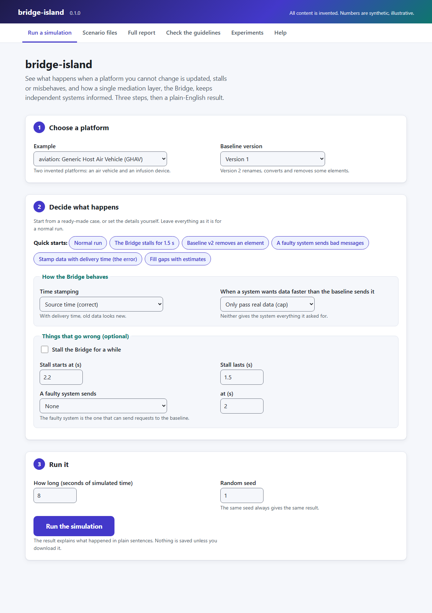
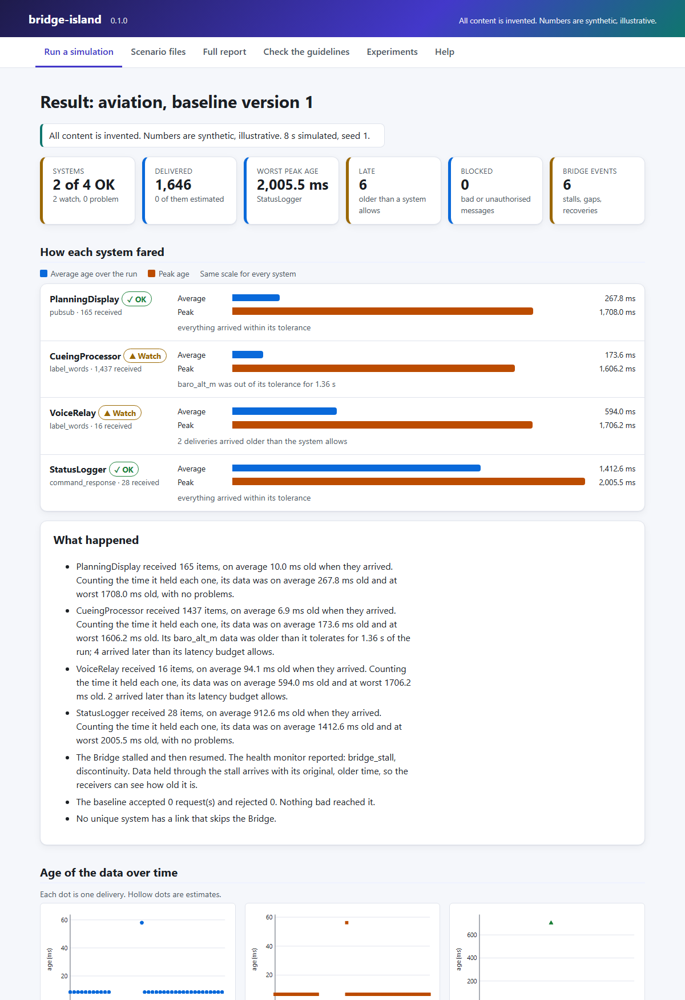

Using the app (no command line)¶
bridge-island has a point-and-click app that opens in your web browser. You choose what should happen in a simulated run, press a button, and get the result explained in plain sentences, with tables, charts and downloads. All content is invented and all numbers are synthetic, illustrative.
Start it¶
Windows: double-click Start-bridge-island.bat in the project folder. A black window opens
and your browser opens the app. Leave the black window open while you use the app.
To get a shortcut on your desktop, right-click Start-bridge-island.bat, choose Send to, then
Desktop (create shortcut).
Any system: the same thing from a terminal is uv run bridge-island ui
(or python -m bridge_island ui). Add --no-browser if you do not want the browser to open, and
--port N to choose the first port to try.
The first time you start it, uv may take a minute to set up the project. After that it starts in
a second or two. You need uv installed once.
Stop it by closing the black window (or pressing Ctrl+C in it).
What you will see¶

The page across the top has six tabs.
| Tab | What it is for |
|---|---|
| Run a simulation | Choose an example, how long to run, how the Bridge behaves, and what goes wrong (a stall, a faulty system). The Quick starts fill the form with common cases. |
| Scenario files | Run one of the shipped scenarios, or paste your own. A scenario file describes one run completely, so it can be shared and repeated. |
| Full report | One page with everything for an example. Open it here, or download it as a single file that works offline. |
| Check the guidelines | Runs a test for each of the six design guidelines and says pass or fail, in words. |
| Experiments | The four repeatable experiments, with tables, plots and downloadable files. |
| Help | Plain-English explanations of every term, how to read the charts, and the scenario file format. |
Reading a result¶

- The tiles across the top are the headline: how many systems are OK, how much was delivered, the worst peak age, how many deliveries were late, how many messages were blocked, and how many things the Bridge noticed. A coloured edge plus a word shows whether to look closer.
- What happened says the same in sentences.
- How each system fared has one row per system with a status (a tick for OK, a triangle for Watch, a cross for Problem; never colour alone), the reason, and two bars on one shared scale: Average age is how old the system's newest value was on average over the whole run, and Peak age is the oldest it ever got. A system can look fine at arrival and still hold old data, so read both (how age is measured).
- Age of the data over time has one chart per system. Across is when the data arrived; up is how old it was. Hollow markers are estimates, and systems use different marker shapes.
- What the Bridge noticed counts the events by kind, then lists them. Show the full table opens every number behind the board.
- Keep the results downloads what you need: the numbers (JSON), every datum (CSV), the settings as a scenario file you can run again, and a record of how to reproduce the run.
- The form is repeated under the result, filled in with what you chose, so you can change one thing and run again. The same seed always gives the same result.
Things to try¶
- Press Run with the defaults. Read What happened.
- Press the quick start The Bridge stalls for 1.5 s. Find the sentence about the health monitor, and the dot high on the chart for the system that holds data longest.
- Try Stamp data with delivery time (the error). The stall is still there, but nothing is flagged late, because old data now looks new. This is why the design keeps the original time (guideline G3).
- Try Baseline v2 removes an element. One system is told that an input is no longer available, instead of quietly going without it.
- Try A faulty system sends bad messages. The Bridge blocks the message and the baseline never sees it.
- Open Check the guidelines and run it on both examples.
Is it safe?¶
The app runs only on your own computer. It listens on the loopback address 127.0.0.1, so other
machines cannot reach it, and it sends nothing anywhere. Every form carries a one-time token for the
session, the address the browser used is checked, and nothing you type is ever used as a file name:
scenarios are chosen from the shipped list or pasted as text, and results are kept in memory and only
written to disk when you press a download button. Do not expose it to a network.
If it does not start¶
| What you see | What to do |
|---|---|
| "bridge-island could not start" in the black window | Install uv and double-click the file again. |
| The browser did not open | Copy the address printed in the black window (it looks like http://127.0.0.1:8765/) into your browser. |
| The address in the window is not 8765 | Another program had that port, so the app used the next free one. Use the address it prints. |
| "This page has expired" | The app was restarted. Reload the page and try again. |
| Your security software blocks it | The app only talks to your own computer. Allow Python or uv to run, or run uv run bridge-island ui from a terminal. |
The app is for learning, demonstration and research. It is not flight or medical software and is not certified. See Design rationale and limitations.